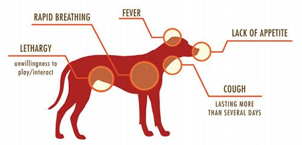

UNDERSTANDING DEADLY CANINE VIRUS
NO.1
CANINE PARVOVIRUS (CPV)

Understanding Canine Parvovirus 2 (CPV-2) and its Impact:
Canine Parvovirus 2 (CPV-2) is a highly contagious and serious disease affecting domestic and wild canines worldwide since its emergence in 1978. It causes acute hemorrhagic enteritis and myocarditis, with a 100% infection rate and high mortality, especially in puppies. Over time, new variants such as CPV-2a, CPV-2b, and CPV-2c have emerged, making disease control more challenging.
Diagnosis relies on serological and molecular tests, while control measures include live attenuated and inactivated vaccines. However, maternal antibodies can interfere with vaccine effectiveness, creating a window of susceptibility. Advanced vaccines like recombinant, peptide, and DNA vaccines are in development but are not yet licensed for field use.
To effectively combat CPV-2, proper vaccination strategies, strict sanitation, and disinfection practices must be followed, considering both domestic and wild canine populations.

NO.2
CANINE DISTEMPER VIRUS (CDV)
Canine Distemper Virus (CDV): The Need for Vigilance
Vaccination has played a crucial role in controlling canine distemper disease. However, reports suggest that CDV-related cases have increased globally in recent decades, even among vaccinated dogs. Some outbreaks have reached nationwide proportions, raising concerns about the virus’s evolving nature.
Continuous surveillance is essential to detect new CDV variants and understand their spread. Additionally, assessing the effectiveness of existing vaccines against emerging strains is crucial to ensuring long-term protection for canine populations.
NO.3
CANINE ADENOVIRUS TYPE 1 & TYPE 2 (CAV)
Canine Adenoviruses (CAdVs) and their Impact:
Canine adenoviruses (CAdVs) are classified into two types: CAdV-1 (virulent strain), which causes infectious canine hepatitis (ICH), and CAdV-2 (attenuated strain), which leads to tracheobronchitis (kennel cough). In recent years, cases of CAdV infections have been rising, but distinguishing between the two strains can be challenging due to their similar symptoms and structural characteristics.
Despite sharing genome structure and morphology, CAdV-1 and CAdV-2 differ in genome sequences, viral activity, and transmission routes. Diagnostic methods like PCR, real-time PCR, and sequence alignment are essential for accurate identification. Currently, the CAdV-2 live attenuated vaccine is used to protect against both serotypes, but its risks highlight the need for further research on improved vaccines and a deeper understanding of CAdV pathogenicity.
NO.4
CANINE INFLUENZA VIRUS (CIV)

Canine Influenza: A Growing Concern
Canine influenza is a relatively new disease in dogs, with documented cases mainly in the United States and Korea. The virus spreads between dogs and, with increased surveillance, more cases are expected to be identified.
Each infection creates a possibility for new variants to emerge, increasing the risk of influenza evolving as a species-crossing pathogen. Ongoing monitoring and research are essential to understanding and controlling the spread of canine influenza.
NO.5
CANINE CORONA VIRUS (CCOV)
Canine Coronavirus (CCoV): An Emerging Threat
Canine coronavirus (CCoV) is closely related to coronaviruses found in cats and pigs, sharing a unique viral species. There are two known genotypes, CCoV Type I and Type II, with recombinant strains identified in recent years. Traditionally, CCoV causes mild gastroenteritis in dogs, but a highly virulent strain (pantropic CCoV) has emerged, leading to fatal systemic infections in puppies.
This strain exhibits genetic differences from typical CCoV, and its severe effects have been confirmed through experimental studies. Ongoing research focuses on understanding its virology, epidemiology, clinical impact, diagnostics, and prevention strategies to protect canine populations from this evolving threat.
NO.6
RABIES VIRUS
Rabies: A Deadly but Preventable Disease
Rabies virus (RABV) causes a fatal neurological infection in humans and animals, primarily transmitted through bites or scratches from rabid animals. The virus spreads to the central nervous system (CNS), leading to severe symptoms and eventual death once signs appear.
Despite its nearly 100% fatality rate, rabies is 100% preventable through post-exposure prophylaxis (PEP) for humans and vaccination of animals. Dogs are responsible for over 99% of human rabies cases, causing 59,000 deaths annually. While PEP is costly and sometimes inaccessible, dog vaccination is a more effective and affordable strategy for controlling the disease.
In response, the World Health Organization (WHO) aims to eliminate dog-mediated human rabies by 2030 through widespread dog vaccination and rabies control initiatives.